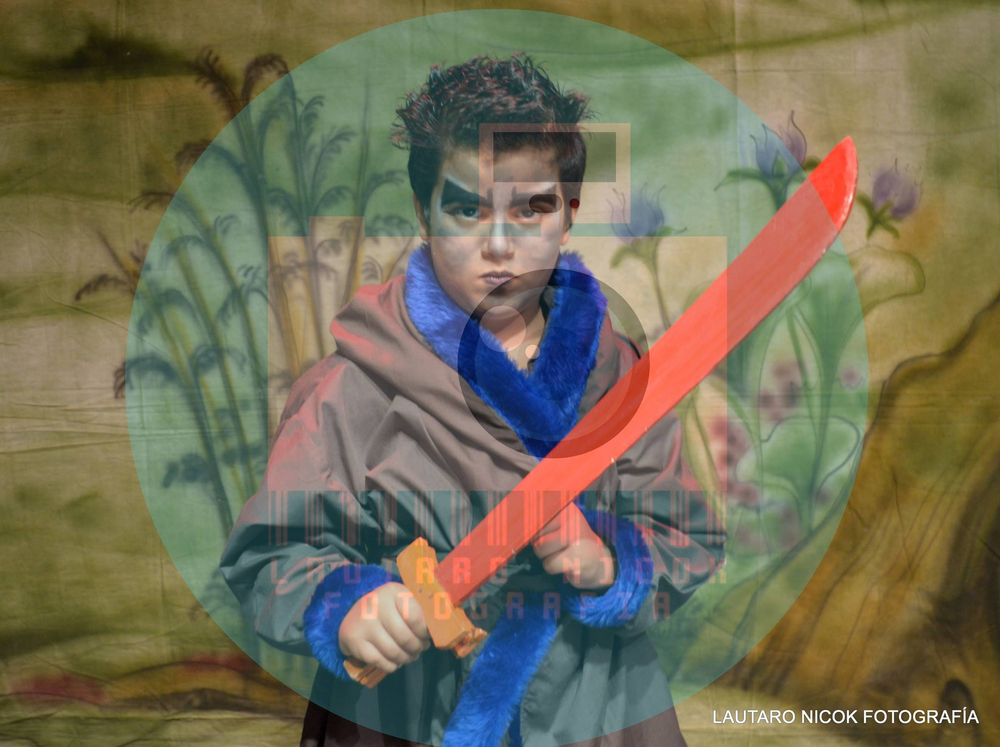
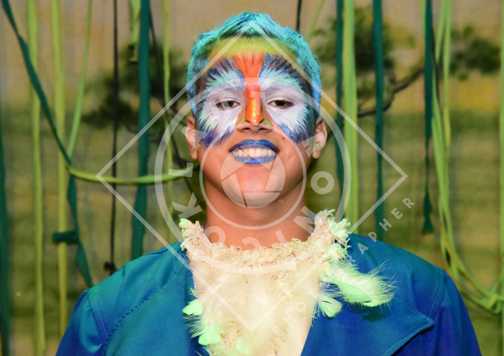

Sus comienzos

André Polverini, un actor dotado cuyo corazón late con pasión por las tablas, llegó a
este mundo el 25 de agosto
de 2007, y desde entonces ha tejido un hechizo irrefutable sobre los espectadores con su innegable destreza
escénica y carisma magnético. Su viaje en el fascinante universo de la actuación es un testimonio elocuente de
cómo los modestos comienzos pueden dar paso a un fulgurante ascenso hacia la cima del estrellato. A través de
inquebrantable perseverancia y dedicación ardiente, André ha moldeado su camino artístico en una narrativa
inspiradora que resuena en el corazón de todos aquellos que tienen el privilegio de presenciar su talento en
acción.

La semilla del amor de André por el teatro se sembró a temprana edad, y pronto se
convirtió en un brote
floreciente en su camino hacia la fama. Fue en la icónica fecha del 30 de octubre de 2010 que dio sus primeros
pasos en el mundo de las tablas al unirse a la Escuela de Teatro Arte Ilusionistas. Aquí, bajo la guía de
maestros apasionados, comenzó a explorar el arte de la actuación teatral y descubrió su innato talento para
comunicar emociones profundas a través de la expresión escénica.
André no se detuvo en sus esfuerzos y continuó cultivando su pasión por el arte dramático.
En enero de 2017,
decidió ampliar sus horizontes al adentrarse en el mundo del arte dramático en la misma institución que le había
dado sus primeros pasos en el teatro. Esta decisión marcó un punto de inflexión en su carrera, ya que pudo
explorar nuevos aspectos de su talento y desarrollar una comprensión más profunda de los matices del oficio.
Reconociendo la importancia de la educación continua y la búsqueda constante de
perfeccionamiento, André
participó en un taller intensivo en la Escuela de Teatro Arte Ilusionistas en 2018. Este taller le brindó una
oportunidad única para pulir sus habilidades y aprender de los maestros más experimentados en la industria del
teatro. Durante este tiempo, su dedicación incansable y su deseo de superarse a sí mismo se volvieron evidentes,
y su enfoque en la excelencia se convirtió en una parte fundamental de su ética de trabajo.
La historia de André Polverini es un testimonio inspirador de cómo la pasión, la
perseverancia y la educación
constante pueden transformar a un joven soñador en un consumado intérprete. A través de su tiempo en la Escuela
de Teatro Arte Ilusionistas, ha demostrado su valía en los escenarios, encarnando personajes con profundidad y
emoción. A medida que avanza en su carrera, André sigue siendo un faro de luz para aquellos que buscan dejar su
huella en el mundo de la actuación, y su nombre seguramente resonará en los teatros durante generaciones
venideras.